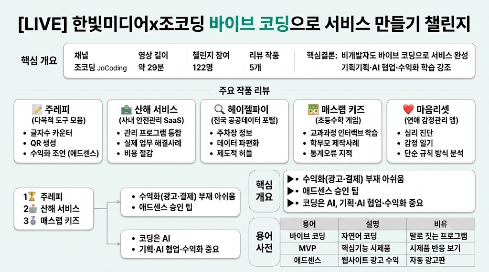

조코딩 JoCodingMORNING DIGEST · 2026-07-27 · 조코딩 JoCoding🎬 영상
[LIVE] 한빛미디어x조코딩 바이브 코딩으로 서비스 만들기 챌린지

01핵심 개요
항목
내용
채널
조코딩 JoCoding
제목
[LIVE] 한빛미디어x조코딩 바이브 코딩으로 서비스 만들기 챌린지
길이
약 29분(1773초)
핵심결론 1
한빛미디어와 함께 진행한 《바이브 코딩 1인 창업》 책 4주 완독 챌린지에 122명이 참여했고, 그중 제출된 5개 서비스(도구 모음 사이트, 사내 안전관리 SaaS, 공공데이터 주차장 포털, 초등수학 게임, 감정관리 앱)를 실시간으로 리뷰했다
핵심결론 2
비개발자(회사원, 학부모)도 바이브 코딩만으로 실사용 가능한 서비스를 완성했으며, 진행자는 "코딩은 AI가 대신하니 나머지(기획·AI 협업·수익화)를 더 많이 공부해야 한다"는 점을 반복 강조했다
핵심결론 3
최종 3개 선정작은 다양한 무료 도구 모음 사이트(주레피), 사내 안전관리 통합 SaaS, 초등수학 게임형 학습 사이트였으며, 대부분 작품에 수익화(광고·결제)가 빠져 있다는 공통 아쉬움이 지적됐다
02핵심 내용 구조
1) 챌린지 개요 — 122명 참여, 5개 작품 선별 제출
조코딩의 저서 《바이브 코딩 1인 창업》 출간을 기념해 한빛미디어와 함께 4주 완독 챌린지를 진행했으며, 웹 개발 기초부터 출시·검증·매출화·구독 자동화·글로벌 진출까지 책의 전 과정을 따라가며 미션을 인증하는 방식으로 운영됐다.
총 122명이 참여했고, 그중 한빛미디어가 선별한 5개 작품이 라이브 방송에서 소개됐다.
2) 작품 1 — 주레피: 다목적 무료 온라인 도구 모음
글자수 카운터, 문장 바꾸기, QR코드 생성기, 나이 계산기, 단위 변환기, 내 IP 찾기, 로또 번호 생성기 등 일상에서 자주 쓰이는 여러 소형 도구를 한 사이트에 모아 무료로 배포했다.
제작자는 "코딩은 AI가 해주니 오히려 AI와 어떻게 협업할지 고민하는 시간이 늘었다"고 소감을 남겼으며, 진행자는 이런 형태의 사이트는 SEO 최적화와 광고(애드센스) 연결이 핵심 수익화 전략이 될 수 있다고 조언했다. 다만 이 작품은 아직 수익화가 붙어 있지 않은 상태로 소개됐다.
3) 작품 2 — 산해 서비스: 회사 안전관리 통합 SaaS
부산 도시가스·SK이노베이션 관련 업무로 추정되는 제작자가 회사 내 흩어진 여러 관리 프로그램(참관 계획, 근태 관리, 안전 회의, 커뮤니티 리포트)을 하나의 사내 SaaS로 통합해 만들었다.
비개발자가 실제 업무 현장의 불편함을 바이브 코딩으로 직접 해결한 사례로 평가되며, 기존 유료 HR·안전관리 솔루션을 대체해 비용을 절감할 수 있는 실용적 모범 사례로 꼽혔다.
4) 작품 3 — 헤이젤파이: 전국 공공데이터 통합 포털
전국 시도별로 파편화된 공공데이터(공영주차장 실시간 자리수, 24시간 병원·약국 등)를 하나로 모아 접근하기 쉽게 만든 정보 포털로, 전국 18,000개 개별 주차장 상세 페이지 중 약 7,000개가 이미 배포됐다.
제작자는 데이터 파편화(시도별 API가 제각각, 지역별 별도 가입 필요)와 위치기반 서비스 사업 신고 같은 제도적 허들을 챌린지 중 겪은 어려움으로 꼽았으며, 진행자는 이런 인허가 절차도 AI(코덱스 등)의 컴퓨터 사용 기능으로 어느 정도 도움받을 수 있다고 언급했다.
5) 작품 4 — 매스랩 키즈: 초등수학 게임형 학습 사이트
자녀가 ChatGPT·Gemini로 수학 문제를 푸는 모습에 충격받은 학부모가 직접 만든 초등 교과과정 기반 게임형 수학 학습 사이트로, 대칭점 찍기·도형 배치(3D/AR 포함) 등 다양한 인터랙티브 문제를 담았다.
비개발·비수학 전공 학부모가 자녀를 위해 AI 도움만으로 완성도 높은 교육용 웹앱을 만든 사례로 소개됐으며, 다만 "15,000 플레이·평균 4.5점" 같은 일부 통계는 실제 로직 없이 표시된 것으로 보여 정리가 필요하다는 지적도 받았다.
6) 작품 5 — 마음리셋: 연애 감정관리 앱
연애 관계에서 느끼는 불안·감정을 이해하도록 돕는 심리 케어 서비스로, 간단한 심리 진단(MBTI 유사 방식), 감정 일기, 맞춤 명상 콘텐츠(호흡 가이드, 사운드), 로컬 저장 기능을 갖췄다.
진행자는 심리 진단 로직이 AI 학습이 아니라 점수 합산 기반의 단순 규칙(if문) 방식으로 보인다고 분석했다.
7) 최종 선정과 공통 피드백
한빛미디어 요청으로 5개 중 3개(주레피, 산해 서비스, 매스랩 키즈)가 최종 선정됐으며, 각각 다양한 콘텐츠로 검색 유입을 노릴 수 있는 점, 실제 업무 문제를 직접 해결한 점, 자녀를 위한 교육적 임팩트가 선정 이유로 제시됐다.
공통 피드백으로 "책의 핵심 주제가 1인 창업(수익화)임에도 대부분 작품에 광고·결제 등 수익화 요소가 빠져 있다"는 아쉬움이 지적됐고, 구글 애드센스 승인이 최근 더 까다로워져 콘텐츠(블로그 등)를 꾸준히 쌓아야 통과 확률이 높아진다는 실전 팁도 공유됐다.
03기술적 맥락
바이브 코딩: 자연어로 AI에게 지시해 코드를 작성·수정하는 개발 방식으로, 비개발자도 서비스를 직접 구현할 수 있게 한다.
SEO(검색엔진최적화): 검색 결과 상위 노출을 위한 콘텐츠·구조 최적화 작업으로, 무료 도구 사이트의 트래픽·광고 수익과 직결된다.
구글 애드센스: 웹사이트에 광고를 게재해 수익을 얻는 구글의 광고 프로그램으로, 콘텐츠 양·품질에 따라 승인 여부가 갈린다.
04전략적 의미
비개발자도 AI 도구만으로 실사용 가능한 서비스를 완성할 수 있음을 실증한 사례들로, 1인 창업의 진입장벽이 '코딩 능력'에서 '기획력·AI 협업 능력·수익화 설계'로 이동했음을 보여준다.
실제 업무 현장이나 개인적 필요(자녀 교육, 감정 관리)에서 출발한 서비스가 범용 아이디어보다 구체적 완성도를 갖추기 쉽다는 시사점을 제공한다.
05핵심 워크플로우·방법론
문제 발견(업무 불편·자녀 교육 고민 등 개인적 니즈) → 바이브 코딩으로 MVP 제작 → 배포 → (미흡한 경우가 많았던) 수익화 설계의 흐름을 보여준다.
인허가·제도적 허들(사업자 등록, 위치기반서비스 신고 등)도 AI의 컴퓨터 사용 기능을 활용해 단계별로 처리할 수 있다는 팁이 제시됐다.
06활용 시나리오
바이브 코딩으로 사이드 프로젝트를 시작하려는 비개발자가 실제 완성 사례와 피드백을 참고할 수 있다.
사내 업무 도구를 직접 만들고 싶은 직장인이 '산해 서비스' 같은 자체 SaaS 제작 사례를 참고할 수 있다.
서비스 출시 후 수익화(광고·애드센스)를 고민하는 1인 개발자가 실전 팁을 얻을 수 있다.
07현황 및 전망
4주 완독 챌린지는 이번 회차로 종료됐으며, 진행자는 향후 유사한 챌린지를 다시 열 가능성을 시사했다.
애드센스 승인 경쟁이 심화되는 추세로, 콘텐츠 지속 발행이 승인의 핵심 조건으로 강조됐다.